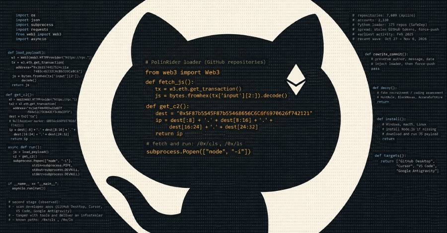

PolinRider: North Korea-Linked Worm Poisons 7,600 GitHub Repos
North Korea-linked attackers have compromised more than 7,600 GitHub repositories, planting a small Python loader that turns trusted open-source projects into a malware distribution channel, The Hacker News reported on November 26, 2026, citing research by Apiiro. The worm rewrites commits while preserving author, message and timestamp, and reads its command-and-control address from Ethereum wallet transactions, so server takedowns do not stop it.

- 01THE ROOTS — February 2025: blockchain records date the earliest PolinRider-related activity to this month, with poisoned npm packages following in May 2025.
- 02THE MEASUREMENT — November 9, 2026: Apiiro reports the loader in at least 7,609 GitHub repositories owned by 2,330 accounts, calling its numbers a lower bound.
- 03THE NEW WAVE — November 25-26, 2026: a suspended account opens more than 200 pull requests against open-source projects, force-pushing an obfuscated loader that stays on the branch for 30 to 40 minutes before the diff is cleaned; SafeDep documents the 58-line Python loader in 375 repositories.
WHAT HAPPENEDWhat Happened
North Korea-linked attackers have compromised more than 7,600 GitHub repositories, planting a small Python loader that turns trusted open-source projects into a malware distribution channel, The Hacker News reported on November 26, 2026, citing research by Apiiro.
Apiiro counted at least 7,609 infected repositories owned by 2,330 accounts, and said 86 percent of them belong to personal accounts more than a year old with five or more repositories and real activity. Named victims include Neutralinojs, InstaWP Connect and fxhash. The loader was pushed into 2,040 repositories between October 27 and November 6, 2026.
The worm rewrites commits a developer already made, preserving the author, message and timestamp, and hides a 58-line loader after hundreds of spaces in build configuration files or test files such as conftest.py. Running the build, or in the newest wave simply opening the folder in VS Code, executes it. The loader reads its command-and-control server address from an Ethereum wallet transaction, so taking a server down changes nothing: one new transaction redirects every loader to the next server.
In a separate November wave, a suspended GitHub account opened more than 200 pull requests against projects including AsyncAPI Generator, CircuitVerse and Open Food Facts, force-pushing a modified commit carrying an obfuscated loader that stayed on the branch for 30 to 40 minutes before being force-pushed away, so the final diff looked clean.
WHY IT MATTERSThe supply chain attack now hides inside the commit itself.
Most supply chain attacks poison a package or a dependency. PolinRider poisons the repository, and it does so by rewriting history rather than adding to it. The forged commit keeps the original author, message and timestamp, so the change is invisible to the usual review signals: the diff looks clean, the author looks legitimate, and the trigger is an ordinary developer action, running a build or opening a folder.
The scale is what turns a clever technique into a systemic problem. More than 7,600 repositories across 2,330 accounts, most of them real working developers, and nearly 2,000 repositories were reinfected after appearing on public lists of infected projects. Cleanup lists do not end this campaign; the worm pushes back over the cleanup.
WHAT REMAINSBlockchain dead drops make takedowns near-useless.
The NullReceiver technique is the campaign's most durable innovation. The loader reads the newest transaction an Ethereum wallet sent to itself, decodes the transaction data as JavaScript, and extracts the command-and-control address from it. Defenders can seize a server, but the attackers publish one transaction and every loader moves on, with no redeployment needed.
What to watch next is whether GitHub and the package registries can detect forged force-pushes at scale, whether the November pull-request wave spreads to more projects, and whether the second-stage payloads, which researchers believe install a remote-access tool and an infostealer harvesting secrets, browser credentials and wallet data, are captured live. Developers should treat unexpected force-pushes and unfamiliar code hidden in config files as a compromise signal, not a glitch.
THE SHIFTWhat Changed
SIGNAL JUDGMENT — ANALYSISThe open-source supply chain now has a worm that rewrites history.
PolinRider is a step change in supply chain attacks because it attacks trust itself. It does not add suspicious code under a stranger's name; it forges a commit under a real developer's name, hides the payload in whitespace, and lets the victim's own build do the running. The blockchain dead drop then removes the one lever defenders usually have, taking the server down. For anyone who clones, forks or builds open-source code, the lesson is blunt: a clean-looking diff and a familiar author are no longer enough. Verify force-pushes, audit config files, and treat the repository itself as an untrusted input.
WHAT REMAINS UNCERTAINWhat Remains Uncertain
EVIDENCEEvidence
North Korea-linked attackers have compromised more than 7,600 GitHub repositories, planting a small Python loader that turns trusted open-source projects into a malware distribution channel, The Hacker News reported on November 26, 2026, citing research by Apiiro. The loader hides in build configuration files and runs when a developer builds the project or opens the folder in VS Code.
PRIMARY SOURCESPrimary Sources
- The Hacker News: North Korea-Linked PolinRider Poisons Over 7,600 GitHub Repositories to Spread Malware
https://thehackernews.com/2026/11/north-korea-linked-polinrider-poisons.html - Corgea: PolinRider expands from npm into Go, Packagist, and Chrome extension supply-chain poisoning
https://corgea.com/research/polinrider-npm-packagist-go-chrome-july-2026 - OSINTSights: PolinRider Targets GitHub Repos with Malware
https://osintsights.com/polinrider-targets-github-repos-with-malware